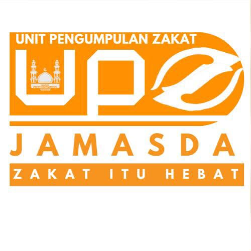

Aspek Manajemen & Status Kepemilikan
Legalitas resmi Amal Usaha Muhammadiyah (AUM)
1. Status Kepemilikan & Tanah Wakaf
Beralamat di Tembesi RT/RW 01/10, Ponjong, Gunungkidul, DIY. Status kepemilikan tanah dan bangunan adalah Wakaf Persyarikatan Muhammadiyah atas nama Pimpinan Pusat Muhammadiyah.
- Luas Tanah: 1.342 m²
- Luas Bangunan: 471,50 m²
- Sertifikat Wakaf 1: No. W2/10/9/89 (1 Des 1989), No. Sertifikat 00353, Wakif: Muh. Syahidi.
- Sertifikat Wakaf 2: No. W:2/01/09/2020 (18 Juni 2020), Wakif: Tumiyati.
2. IMB Tempat Ibadah & Pembinaan
Memiliki dokumen perizinan resmi Persetujuan Bangunan Gedung (PBG) No: 01/P.IMB.BG/II/2021 yang diterbitkan oleh Dinas Penanaman Modal dan Pelayanan Terpadu Kabupaten Gunungkidul pada tanggal 25 Februari 2021.
Pembinaan Kelembagaan: Di bawah pembinaan Pimpinan Ranting Muhammadiyah (PRM) Ponjong Timur dan Pimpinan Cabang Muhammadiyah (PCM) Ponjong.

Edukasi Zakat Wajib vs Sedekah Sunnah
"ZAKAT ITU HEBAT - Mari bersihkan harta & tumbuhkan kebaikan bersama"
1. ZAKAT ITU WAJIB
Kewajiban harta bagi setiap Muslim yang memenuhi syarat:
- Nishab: Setara dengan 85 gram emas.
- Haul: Tersimpan selama 1 tahun Hijriyah.
Jika harga emas = Rp1.200.000/gram
Nishab = Rp1.200.000 x 85 = Rp102.000.000
Kewajiban Zakat (2,5%) = Rp2.550.000/tahun.
2. SEDEKAH ITU SUNNAH
Bisa dilakukan oleh siapa saja, kapan saja, dan berapa pun jumlahnya:
- Tidak Ada Nishab: Bebas nominal.
- Tidak Perlu Haul: Kapan saja tanpa menunggu setahun.
- Sifat Sukarela: Melatih kepedulian dan membersihkan jiwa.
Sangat dianjurkan untuk operasional masjid, santri TPA, & bantuan kaum dhuafa.
Susunan Pengurus Takmir Masjid Subardi Al-Huda
Ditetapkan berdasarkan SK PCM Ponjong No. 44/KEP./IV.0/D/2023
• Faizus Sya'bani
• Romdhoni
• Kasino
• Ngadimin
Ketua I: Ahmad Sunardi
Ketua II: Zakaria Kurniawan
Sekretaris I: Romadani Apriyanto
Sekretaris II: Zahra Fauziyah
Bendahara I: Awan Rahmadi
Bendahara II: Suparmi
Imam Tetap Masjid
- Bilal Jora Maulana
- Romadani Apriyanto
- Faizuz Sa'bani
- Masruri
Daftar Muadzin Tetap
- Mashudi
- Sugiyatno
- Alfan
- Nanda Bima
Marbot Tetap Masjid
Sugiyatno
Penanggung jawab kebersihan & pemeliharaan sarana fisik masjid.
Pengelolaan Program Berbasis 3 Pilar Kemasjidan
1. Bidang Idarah
Manajemen & Administrasi
Penyusunan SOP, transparansi laporan keuangan mingguan, serta tata kelola digitalisasi data masjid.
2. Bidang Imarah
Peribadatan & Pembinaan
Pemurnian aqidah, perkaderan jamaah, Pengajian Ahad Pagi (PAP), dan bimbingan ibadah harian.
3. Bidang Ri'ayah
Pemeliharaan Fisik & Sarpras
Perawatan karpet, CCTV keamanan, kebersihan ruang utama, serta penyediaan fasilitas ramah lansia/difabel.
Kemakmuran Jamaah & Majelis Kajian Islam
Pemberdayaan Remaja, Ekonomi & Pelayanan Sosial
Remaja Masjid (ARIA)
Tahsin Night Sabtu malam, program Hifz Qur'an, Palang Merah Remaja, & Festival Ramadan.
Ekonomi & Qurban
Budidaya alpukat, pembagian bibit tanaman, program gadhuh qurban, & air minum BUKM.
Layanan Sosial
Panti Asuhan Rumah Sejahtera, Rukti Jenazah 30 tim, serta pemeriksaan kesehatan berkala PKU.
Al-Qur'an Al-Karim
114 Surah lengkap: Teks Arab, Latin, & Terjemahan Kemenag RI
TPA UMMI SADIRAH KUWON
Komplek Masjid Subardi Al-Huda Kuwon | Hari Kegiatan: Senin, Rabu, Sabtu (16:30 - 18:00 WIB)
Area Khusus Pengampu / Ustadz Ustadzah
Form Input Capaian & Prestasi Santri Harian
Rekapitulasi Capaian & Prestasi Santri TPA (Akses Publik)
| Tanggal / Hari | Nama Santri | Level / Tingkat | Halaman / Surah / Juz | Keterangan | Infaq | Pengampu | Aksi / Sertifikat |
|---|